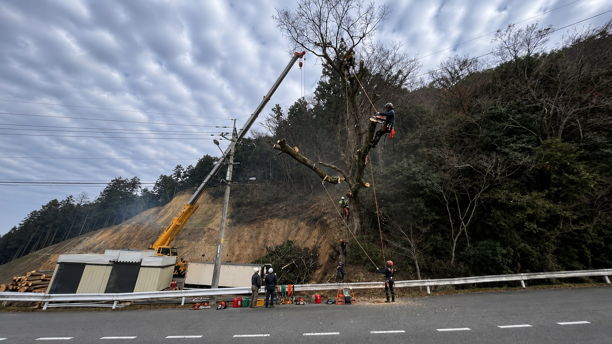
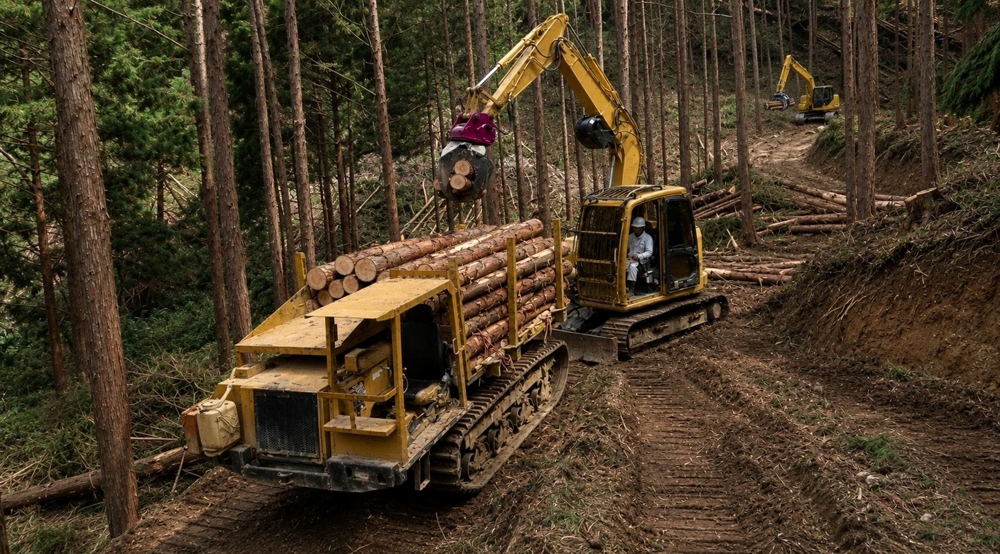

01
立木買取
現地調査と査定を行い、山林や立木の活用方法をご提案します。
 株式会社ClearthForest Resource Company
株式会社ClearthForest Resource Company
SERVICES
森林整備から木材リサイクル・木質チップ製造・バイオマス燃料供給まで、現場と資源活用を一体で考えます。

RESOURCE FLOW
株式会社Clearthは、森林整備から立木買取、木材廃棄物処分、一次破砕、木質チップ製造、バイオマス燃料供給まで一貫して対応しています。森林資源を無駄なく活用し、再生可能エネルギーとして社会へ循環させることで、持続可能な地域づくりに貢献しています。
CONSULTATION
どこに相談したらいいか分からない内容でも、まずはお気軽にご相談ください。





